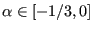
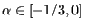
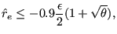
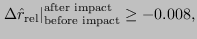
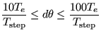
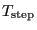
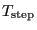

Next: Loading Up: Convergence criteria Previous: Network iterations Contents
In CalculiX, implicit dynamics is implemented using the  -method
[19]. The method is unconditionally stable and second order
accurate. The parameter
 represents high frequency
damping. The lower the value, the more high frequency dissipation is
introduced. This is frequently desired in order to reduce noice. However, it
also leads to energy loss.
-method
[19]. The method is unconditionally stable and second order
accurate. The parameter
 represents high frequency
damping. The lower the value, the more high frequency dissipation is
introduced. This is frequently desired in order to reduce noice. However, it
also leads to energy loss.
An analysis has shown that the usual static convergence criteria have to be supplemented by energy criteria in order to obtain good results. To this end, the relative energy balance is used defined by:
 |
(488) |
where
At the start of the step the relative energy balance is zero. During the step it
usually decreases (becomes negative) and increases in size. Limiting the
relative energy decay at the end of the step to  , during the step the following
minimum energy decay function is proposed:
, during the step the following
minimum energy decay function is proposed:
| (489) |
where  is the relative step time,
is the relative step time,
 . The
following algorithm is now used:
. The
following algorithm is now used:
If
| (490) |
the increment size is decreased. Else if
|  | (491) |
the increment size is kept. Else it is increased.
In dynamic calculations contact is frequently an important issue. As soon as more than one body is modeled they may and generally will come into contact. In CalculiX penalty contact is implemented by the use of springs, either in a node-to-face version or in a face-to-face version. A detailed analysis of contact phenomena in dynamic calculations [64] has revealed that there are three instances at which energy may be lost: at the time of impact, during persistent contact and at the time of rebound.
At the time of impact a relative energy decrease has been observed, whereas at the time of rebound a relative energy increase occurs. The reason for this is the finite time increment during which impact or rebound takes place. During closed contact the contact forces do not perform any work (they are equal and opposite and are subject to a common motion). However, in the increment during which impact or rebound occurs, they do perform work in the part of the increment during which the gap is not closed. The more precise the time of impact coincides with the beginning or end of an increment, the smaller the error. Therefore, the following convergence criteria are prososed:
At impact the relative energy decrease (after impact minus before impact) should not exceed 0.008, i.e.
|  | (492) |
else the increment size is decreased by a factor of 4.
At rebound the relative energy increase between the time of rebound and the time of impact should not exceed 0.0025, i.e.
| (493) |
else the increment size is decreased by a factor of 2.
In between impact and rebound (persistent contact) both the impact criterion
as well as the rebound criterion has to be satisfied. Furthermore it has been
observed that during contact frequently vibrations are generated corresponding
to the eigenfrequency of the contact springs. Due to the high frequency
damping characteristics of the  -method this contributes additionally
to a decay of the relative energy. To avoid this, the time increment should
ideally exceed the period of these oscillations substantionally,
-method this contributes additionally
to a decay of the relative energy. To avoid this, the time increment should
ideally exceed the period of these oscillations substantionally,
|  | (494) |
is aimed at, where  is the period of the oscillations,

is the duration of the step and
is the period of the oscillations,

is the duration of the step and  is the relative increment size.
is the relative increment size.